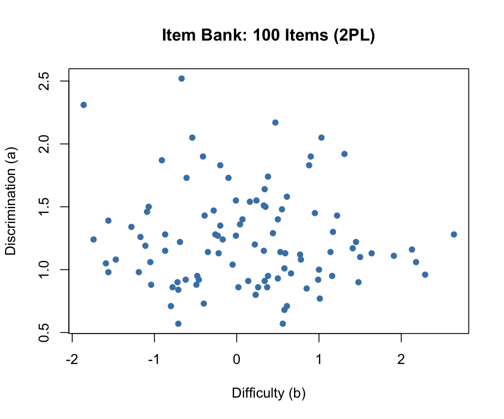
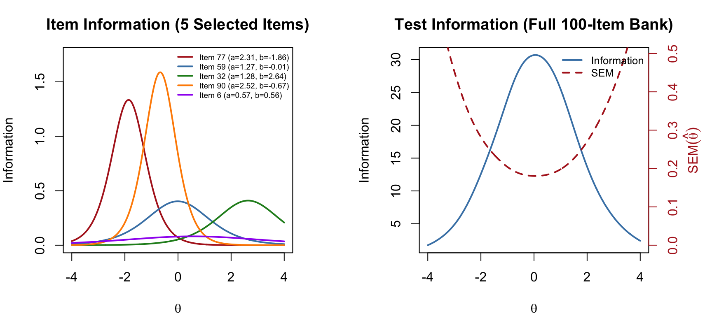
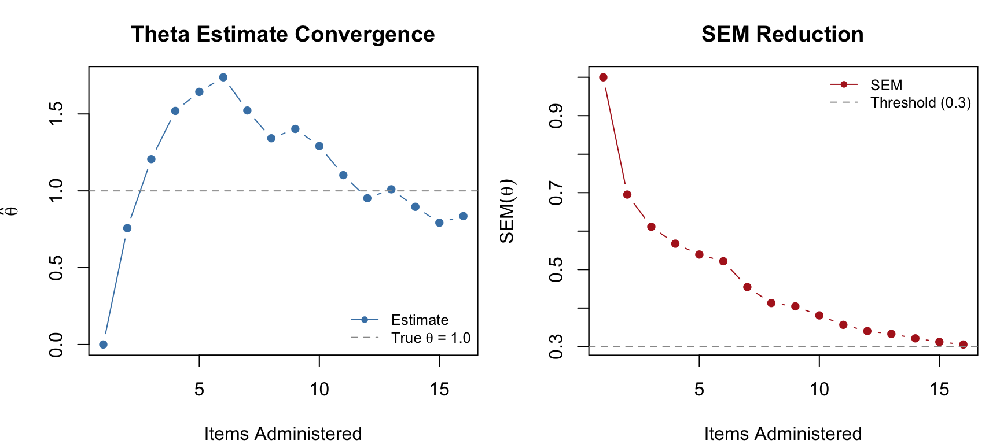
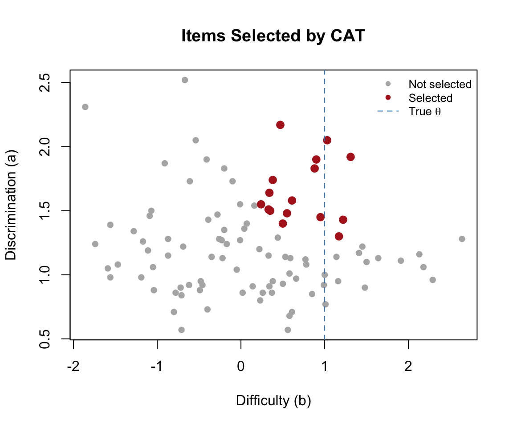
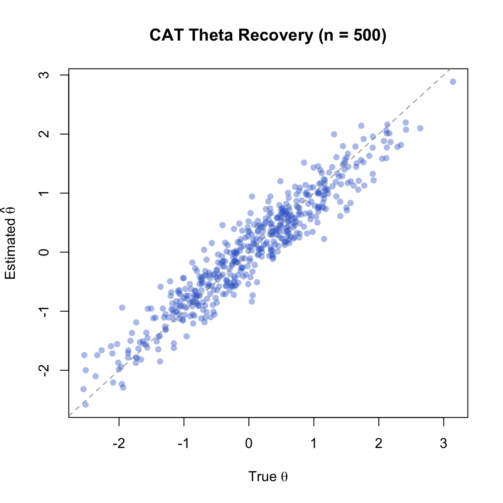
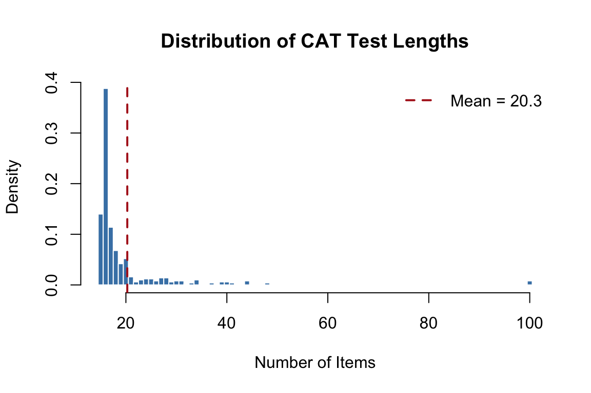
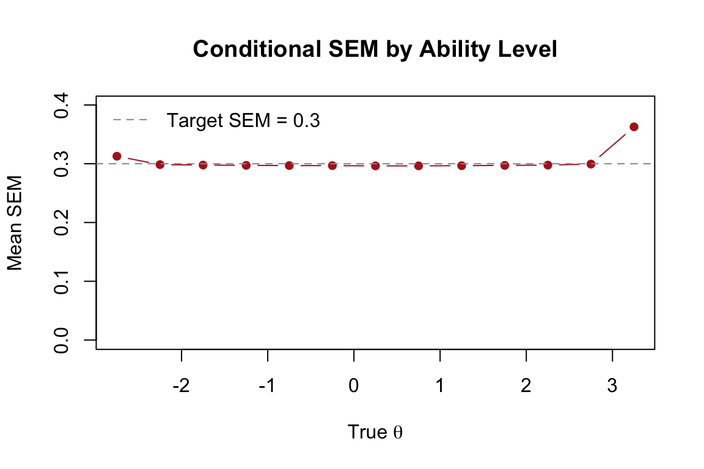

Code
library(mirt)
library(mirtCAT)
library(kableExtra)In conventional testing, every examinee receives the same items. This “one size fits all” approach is efficient to administer but wasteful from a measurement perspective—high-proficency examinees spend time on items that are too easy to be informative, while low-proficiency examinees struggle through items that are too hard.
Computerized adaptive testing (CAT) offers a smarter alternative: each examinee receives a test tailored to their proficiency level. After every item, the computer updates its estimate of the examinee’s proficiency and selects the next item to maximize the precision of that estimate. The result is shorter tests that maintain—or even improve—measurement precision compared to fixed-form tests.
This tutorial introduces the mechanics of CAT through simulation using the mirtCAT package in R. We will:
Prerequisites: This tutorial assumes familiarity with IRT basics, including the 2PL model, item and test information functions, and theta estimation methods (MAP, EAP) covered earlier in the course.
library(mirt)
library(mirtCAT)
library(kableExtra)Every CAT begins with a calibrated item bank—a collection of items with known IRT parameters. In practice, these parameters come from a prior calibration study with a large sample. Here, we simulate an item bank so that we have full control over the “truth.”
We generate 100 items with discrimination (\(a\)) and difficulty (\(b\)) parameters drawn from realistic distributions:
set.seed(2026)
n_items <- 100
# Discrimination: lognormal to ensure positive values, centered around 1.2
a <- round(rlnorm(n_items, meanlog = 0.2, sdlog = 0.3), 2)
# Difficulty: normal, spread across the ability range
b <- round(rnorm(n_items, mean = 0, sd = 1.0), 2)
# Display the first 10 items
data.frame(Item = 1:10, a = a[1:10], b = b[1:10]) |>
kable("html", col.names = c("Item", "Discrimination (a)", "Difficulty (b)")) |>
kable_styling(full_width = FALSE)| Item | Discrimination (a) | Difficulty (b) |
|---|---|---|
| 1 | 1.43 | 1.22 |
| 2 | 0.88 | -0.49 |
| 3 | 1.27 | -0.23 |
| 4 | 1.19 | -1.11 |
| 5 | 1.00 | 1.00 |
| 6 | 0.57 | 0.56 |
| 7 | 0.98 | -1.56 |
| 8 | 0.90 | 1.48 |
| 9 | 1.26 | -1.17 |
| 10 | 1.06 | -1.05 |
plot(b, a, pch = 16, col = "steelblue",
xlab = "Difficulty (b)", ylab = "Discrimination (a)",
main = "Item Bank: 100 Items (2PL)")
The item bank has good coverage of the ability range, with difficulties spanning roughly \(-2\) to \(+2\) and discriminations clustering around 1.0 to 1.5. This is a well-designed pool for adaptive testing.
The mirt package uses the slope-intercept parameterization internally, where \(P(\theta) = 1 / (1 + e^{-(a_1\theta + d)})\). The relationship to the traditional IRT parameterization is \(d = -a \times b\). We use generate.mirt_object() to create a calibrated model object from known parameters:
# Convert to mirt's slope-intercept form
pars <- data.frame(a1 = a, d = -a * b)
mod <- generate.mirt_object(pars, itemtype = '2PL')
# Verify: extract parameters in traditional IRT form
coef_trad <- coef(mod, IRTpars = TRUE, simplify = TRUE)$items
head(coef_trad) a b g u
Item.1 1.43 1.22 0 1
Item.2 0.88 -0.49 0 1
Item.3 1.27 -0.23 0 1
Item.4 1.19 -1.11 0 1
Item.5 1.00 1.00 0 1
Item.6 0.57 0.56 0 1The generate.mirt_object() function creates a full mirt model object that can be used with all mirt and mirtCAT functions—just as if we had estimated the parameters from data.
The item information function for the 2PL model is:
\[I_j(\theta) = a_j^2 \cdot P_j(\theta) \cdot [1 - P_j(\theta)]\]
Each item provides maximum information at \(\theta = b_j\), with a peak value of \(a_j^2 / 4\). Items with higher discrimination provide more information. The test information function is the sum across all items: \(I(\theta) = \sum_{j=1}^{J} I_j(\theta)\).
theta_range <- seq(-4, 4, 0.01)
par(mfrow = c(1, 2), mar = c(4, 4, 3, 4))
# Item information for 5 representative items
items_show <- c(which.min(b), which.min(abs(b)), which.max(b),
which.max(a), which.min(a))
items_show <- unique(items_show)[1:5]
cols <- c("firebrick", "steelblue", "forestgreen", "darkorange", "purple")
plot(NULL, xlim = c(-4, 4), ylim = c(0, max(a^2 / 4) * 1.1),
xlab = expression(theta), ylab = "Information",
main = "Item Information (5 Selected Items)")
for (k in seq_along(items_show)) {
j <- items_show[k]
p <- 1 / (1 + exp(-a[j] * (theta_range - b[j])))
info <- a[j]^2 * p * (1 - p)
lines(theta_range, info, col = cols[k], lwd = 2)
}
legend("topright",
paste0("Item ", items_show, " (a=", a[items_show], ", b=", b[items_show], ")"),
col = cols, lwd = 2, cex = 0.6, bty = "n")
# Test information function (full bank)
test_info <- rep(0, length(theta_range))
for (j in 1:n_items) {
p <- 1 / (1 + exp(-a[j] * (theta_range - b[j])))
test_info <- test_info + a[j]^2 * p * (1 - p)
}
plot(theta_range, test_info, type = "l", lwd = 2, col = "steelblue",
xlab = expression(theta), ylab = "Information",
main = "Test Information (Full 100-Item Bank)")
# Add SEM on right axis
se_vals <- 1 / sqrt(test_info)
par(new = TRUE)
plot(theta_range, se_vals, type = "l", lwd = 2, lty = 2, col = "firebrick",
axes = FALSE, xlab = "", ylab = "",
ylim = c(0, max(se_vals[abs(theta_range) < 3]) * 1.1))
axis(4, col = "firebrick", col.axis = "firebrick")
mtext(expression(SEM(hat(theta))), side = 4, line = 2.5, col = "firebrick")
legend("topright", c("Information", "SEM"),
lty = c(1, 2), col = c("steelblue", "firebrick"), lwd = 2, cex = 0.8, bty = "n")
par(mfrow = c(1, 1))The test information function shows where the full item bank measures most precisely. The standard error of measurement is \(SEM(\hat{\theta}) = 1/\sqrt{I(\theta)}\)—lower information means higher SEM. A CAT algorithm exploits this relationship by selecting items that maximize information at the examinee’s current estimated ability.
Let’s walk through a complete CAT administration for a single examinee. We set the true ability to \(\theta = 1.0\) and observe how the algorithm converges.
In simulation, we pre-generate the examinee’s responses to all 100 items. The CAT algorithm then “looks up” the response to each selected item—it never sees items it does not administer. This is the standard trick for offline CAT simulation.
true_theta <- 1.0
set.seed(101)
pattern <- generate_pattern(mod, Theta = true_theta)
cat("Responses (first 20 items):", as.integer(pattern)[1:20], "\n")Responses (first 20 items): 0 0 1 1 0 0 1 0 1 1 1 1 1 1 1 1 1 0 0 0 The mirtCAT() function with local_pattern runs an offline CAT simulation. We specify:
criteria = 'MI': select the item with maximum (Fisher) information at the current \(\hat\theta\)method = 'MAP': update the theta estimate using maximum a posteriori estimationstart_item = 'MI': begin with the most informative item at the prior mean (\(\theta_0 = 0\))min_SEM = 0.3: stop when the standard error of measurement drops below 0.3result <- mirtCAT(mo = mod, local_pattern = pattern,
criteria = 'MI', method = 'MAP',
start_item = 'MI',
design = list(min_SEM = 0.3))
summary(result)$final_estimates
Theta_1
Estimates 0.8837407
SEs 0.2998918
$raw_responses
[1] "2" "2" "2" "2" "2" "1" "1" "2" "1" "1" "1" "2" "1" "1" "2" "2"
$scored_responses
[1] 1 1 1 1 1 0 0 1 0 0 0 1 0 0 1 1
$items_answered
[1] 26 30 82 24 73 1 39 86 18 89 94 29 78 47 49 54
$thetas_history
Theta_1
[1,] 0.0000000
[2,] 0.7573132
[3,] 1.2065467
[4,] 1.5200627
[5,] 1.6443069
[6,] 1.7390787
[7,] 1.5229858
[8,] 1.3420889
[9,] 1.4028992
[10,] 1.2915675
[11,] 1.1019821
[12,] 0.9521482
[13,] 1.0099991
[14,] 0.8960645
[15,] 0.7925512
[16,] 0.8354910
[17,] 0.8837407
$thetas_SE_history
Theta_1
[1,] 1.0000000
[2,] 0.6950855
[3,] 0.6113410
[4,] 0.5673968
[5,] 0.5390944
[6,] 0.5216840
[7,] 0.4545631
[8,] 0.4129879
[9,] 0.4044728
[10,] 0.3808441
[11,] 0.3563769
[12,] 0.3401659
[13,] 0.3326456
[14,] 0.3211795
[15,] 0.3119357
[16,] 0.3051918
[17,] 0.2998918
$true_thetas
[1] 1n_admin <- length(result$items_answered)
cat("True theta: ", true_theta, "\n")True theta: 1 cat("Estimated theta: ", round(result$thetas, 3), "\n")Estimated theta: 0.884 cat("Final SEM: ", round(result$SE_thetas, 3), "\n")Final SEM: 0.3 cat("Items administered:", n_admin, "out of", n_items, "\n")Items administered: 16 out of 100 cat("Items selected (in order):", result$items_answered, "\n")Items selected (in order): 26 30 82 24 73 1 39 86 18 89 94 29 78 47 49 54 The CAT produced an estimate fairly close to the true theta using far fewer than the full 100 items, demonstrating the efficiency of adaptive item selection. The final estimate is within about one half an SEM of the true value.
One of the most instructive ways to understand CAT is to watch the theta estimate and its SEM evolve as items are administered.
theta_hist <- result$thetas_history[1:n_admin, 1]
se_hist <- result$thetas_SE_history[1:n_admin, 1]
par(mfrow = c(1, 2), mar = c(4, 4, 3, 1))
# Theta convergence
plot(1:n_admin, theta_hist, type = "b", pch = 16, col = "steelblue",
xlab = "Items Administered", ylab = expression(hat(theta)),
main = "Theta Estimate Convergence")
abline(h = true_theta, lty = 2, col = "gray60")
legend("bottomright", c("Estimate", expression("True " * theta * " = 1.0")),
pch = c(16, NA), lty = c(1, 2), col = c("steelblue", "gray60"),
cex = 0.8, bty = "n")
# SEM reduction
plot(1:n_admin, se_hist, type = "b", pch = 16, col = "firebrick",
xlab = "Items Administered", ylab = expression(SEM(hat(theta))),
main = "SEM Reduction")
abline(h = 0.3, lty = 2, col = "gray60")
legend("topright", c("SEM", "Threshold (0.3)"),
pch = c(16, NA), lty = c(1, 2), col = c("firebrick", "gray60"),
cex = 0.8, bty = "n")
par(mfrow = c(1, 1))Notice how the theta estimate stabilizes quickly after the first few items, and the SEM decreases steadily. The CAT stops as soon as the SEM drops below 0.3.
We can visualize which items the CAT selected by highlighting them in the item bank. The algorithm should favor items with difficulty close to the true theta and high discrimination.
selected <- result$items_answered
plot(b, a, pch = 16, col = "gray70",
xlab = "Difficulty (b)", ylab = "Discrimination (a)",
main = "Items Selected by CAT")
points(b[selected], a[selected], pch = 16, col = "firebrick", cex = 1.3)
abline(v = true_theta, lty = 2, col = "steelblue")
legend("topright", c("Not selected", "Selected", expression("True " * theta)),
pch = c(16, 16, NA), lty = c(NA, NA, 2),
col = c("gray70", "firebrick", "steelblue"),
cex = 0.8, bty = "n")
As expected, the CAT preferentially selects items with \(b\) values near the true ability and high \(a\) values—these are the items that provide the most information at \(\theta = 1.0\).
Maximum information (MI) is the most intuitive selection criterion, but other approaches exist. Let’s compare three common criteria on the same examinee:
Re. the KL criterion. In the CAT context, we ask: for each candidate item, how much would we expect the posterior distribution of \(\theta\) to shift depending on whether the examinee answers correctly or incorrectly? An item where the two possible posteriors (correct vs. incorrect) are very different is highly informative, because observing the response will tell us a lot. The KL criterion selects the item that maximizes this expected divergence
res_mi <- mirtCAT(mo = mod, local_pattern = pattern,
criteria = 'MI', method = 'MAP',
start_item = 'MI', design = list(min_SEM = 0.3))
res_mepv <- mirtCAT(mo = mod, local_pattern = pattern,
criteria = 'MEPV', method = 'MAP',
start_item = 'MI', design = list(min_SEM = 0.3))
res_kl <- mirtCAT(mo = mod, local_pattern = pattern,
criteria = 'KL', method = 'MAP',
start_item = 'MI', design = list(min_SEM = 0.3))
data.frame(
Criterion = c("MI", "MEPV", "KL"),
Theta = round(c(res_mi$thetas, res_mepv$thetas, res_kl$thetas), 3),
SEM = round(c(res_mi$SE_thetas, res_mepv$SE_thetas, res_kl$SE_thetas), 3),
Items = c(length(res_mi$items_answered),
length(res_mepv$items_answered),
length(res_kl$items_answered))
) |>
kable("html", col.names = c("Criterion", "Final \u03b8\u0302", "Final SEM", "Items Used")) |>
kable_styling(full_width = FALSE)| Criterion | Final θ̂ | Final SEM | Items Used |
|---|---|---|---|
| MI | 0.884 | 0.300 | 16 |
| MEPV | 0.861 | 0.298 | 17 |
| KL | 0.884 | 0.300 | 16 |
cat("First 5 items selected:\n")First 5 items selected:cat(" MI: ", res_mi$items_answered[1:min(5, length(res_mi$items_answered))], "\n") MI: 26 30 82 24 73 cat(" MEPV:", res_mepv$items_answered[1:min(5, length(res_mepv$items_answered))], "\n") MEPV: 26 30 82 24 73 cat(" KL: ", res_kl$items_answered[1:min(5, length(res_kl$items_answered))], "\n") KL: 26 30 82 24 73 All three criteria produce similar final estimates, but they may differ in which items they select and in what order. MI is the most widely used and computationally simplest—it selects the item that is maximally informative at the current point estimate. MEPV and KL are sometimes preferred in the early stages of a CAT when the theta estimate is highly uncertain, because they account for the full posterior distribution rather than just the point estimate.
When should the CAT stop administering items? The choice of termination rule depends on the purpose of the test.
Stop when the SEM of the theta estimate drops below a specified threshold. This produces variable-length tests where each examinee is measured to the same precision.
res_sem30 <- mirtCAT(mo = mod, local_pattern = pattern,
criteria = 'MI', method = 'MAP',
design = list(min_SEM = 0.3))
res_sem20 <- mirtCAT(mo = mod, local_pattern = pattern,
criteria = 'MI', method = 'MAP',
design = list(min_SEM = 0.2))
cat("min_SEM = 0.3:", length(res_sem30$items_answered), "items,",
"SEM =", round(res_sem30$SE_thetas, 3), "\n")min_SEM = 0.3: 17 items, SEM = 0.298 cat("min_SEM = 0.2:", length(res_sem20$items_answered), "items,",
"SEM =", round(res_sem20$SE_thetas, 3), "\n")min_SEM = 0.2: 94 items, SEM = 0.2 Tighter precision demands more items. Because \(SEM \propto 1/\sqrt{I}\) and each item contributes roughly the same amount of information when well-targeted, halving the SEM threshold roughly quadruples the required number of items!
Stop after a specified number of items, regardless of precision. This produces fixed-length tests where examinees may be measured with different precision depending on where they fall on the ability scale.
res_fix15 <- mirtCAT(mo = mod, local_pattern = pattern,
criteria = 'MI', method = 'MAP',
design = list(max_items = 15))
res_fix30 <- mirtCAT(mo = mod, local_pattern = pattern,
criteria = 'MI', method = 'MAP',
design = list(max_items = 30))
cat("max_items = 15: theta =", round(res_fix15$thetas, 3),
" SEM =", round(res_fix15$SE_thetas, 3), "\n")max_items = 15: theta = 0.798 SEM = 0.31 cat("max_items = 30: theta =", round(res_fix30$thetas, 3),
" SEM =", round(res_fix30$SE_thetas, 3), "\n")max_items = 30: theta = 0.888 SEM = 0.298 For licensure or placement tests, the goal is often not to estimate theta precisely but to classify examinees as above or below a cut score. The CAT stops when it is sufficiently confident about the classification.
res_class <- mirtCAT(mo = mod, local_pattern = pattern,
criteria = 'MI', method = 'MAP',
design = list(classify = 0, classify_CI = 0.95))
cat("Classification cut score: 0\n")Classification cut score: 0cat("Items administered:", length(res_class$items_answered), "\n")Items administered: 5 cat("Final theta:", round(res_class$thetas, 3), "\n")Final theta: 1.205 cat("Final SEM:", round(res_class$SE_thetas, 3), "\n")Final SEM: 0.495 cat("Classification:",
ifelse(res_class$thetas > 0, "Above cut (pass)", "Below cut (fail)"), "\n")Classification: Above cut (pass) Classification CATs are often shorter than precision-based CATs for examinees whose ability is clearly above or below the cut score—the algorithm only needs to determine which side the examinee falls on, not estimate theta precisely. Examinees near the cut score will require more items.
data.frame(
Rule = c("min_SEM = 0.3", "min_SEM = 0.2", "max_items = 15",
"max_items = 30", "Classify (cut = 0)"),
Items = c(length(res_sem30$items_answered), length(res_sem20$items_answered),
15, 30, length(res_class$items_answered)),
Theta = round(c(res_sem30$thetas, res_sem20$thetas, res_fix15$thetas,
res_fix30$thetas, res_class$thetas), 3),
SEM = round(c(res_sem30$SE_thetas, res_sem20$SE_thetas, res_fix15$SE_thetas,
res_fix30$SE_thetas, res_class$SE_thetas), 3)
) |>
kable("html", col.names = c("Termination Rule", "Items", "Final \u03b8\u0302", "Final SEM")) |>
kable_styling(full_width = FALSE)| Termination Rule | Items | Final θ̂ | Final SEM |
|---|---|---|---|
| min_SEM = 0.3 | 17 | 0.888 | 0.298 |
| min_SEM = 0.2 | 94 | 1.111 | 0.200 |
| max_items = 15 | 15 | 0.798 | 0.310 |
| max_items = 30 | 30 | 0.888 | 0.298 |
| Classify (cut = 0) | 5 | 1.205 | 0.495 |
So far, item selection has been driven purely by psychometric criteria—pick the item that provides the most information at the current \(\hat{\theta}\). In practice, operational CATs must also satisfy content constraints. A state math assessment, for example, might require that every examinee sees items spanning the subdomains of number & operations, algebra, measurement and geometry. Or there might be difference in “depth of knowledge” expectations. Without content balancing, the algorithm would repeatedly select items from whichever content area happens to have the most informative items near the examinee’s ability, leaving other areas underrepresented.
The mirtCAT package supports content balancing through the content and content_prop arguments in the design list. Each item is assigned a content label, and the algorithm enforces target proportions as it selects items.
To illustrate, we tag each item in our 100-item bank with a Depth of Knowledge (DOK) level—recall and reproduction (DOK 1), skills and concepts (DOK 2), or strategic thinking (DOK 3)—and require that the CAT selects items in roughly 30%/50%/20% proportions.
set.seed(2026)
dok <- factor(sample(c("DOK1", "DOK2", "DOK3"), n_items, replace = TRUE,
prob = c(0.35, 0.45, 0.20)))
table(dok)dok
DOK1 DOK2 DOK3
33 49 18 Now we run two CATs on the same examinee: one without content balancing and one with.
# No content balancing
res_nobal <- mirtCAT(mo = mod, local_pattern = pattern,
criteria = 'MI', method = 'MAP',
start_item = 'MI',
design = list(min_SEM = .3))
# With content balancing
res_bal <- mirtCAT(mo = mod, local_pattern = pattern,
criteria = 'MI', method = 'MAP',
start_item = 'MI',
design = list(min_SEM = .3,
content = dok,
content_prop = c("DOK1" = 0.30,
"DOK2" = 0.50,
"DOK3" = 0.20)))
# Compare DOK distribution of selected items
nobal_dok <- table(dok[res_nobal$items_answered])
bal_dok <- table(dok[res_bal$items_answered])
data.frame(
DOK = names(bal_dok),
Target = c("30%", "50%", "20%"),
Unconstrained = as.integer(nobal_dok),
Balanced = as.integer(bal_dok)
) |>
kable("html", col.names = c("DOK Level", "Target %", "Unconstrained", "Balanced")) |>
kable_styling(full_width = FALSE)| DOK Level | Target % | Unconstrained | Balanced |
|---|---|---|---|
| DOK1 | 30% | 6 | 5 |
| DOK2 | 50% | 6 | 8 |
| DOK3 | 20% | 4 | 4 |
cat("Unconstrained: theta =", round(res_nobal$thetas, 3),
" SEM =", round(res_nobal$SE_thetas, 3), "\n")Unconstrained: theta = 0.884 SEM = 0.3 cat("Balanced: theta =", round(res_bal$thetas, 3),
" SEM =", round(res_bal$SE_thetas, 3), "\n")Balanced: theta = 0.938 SEM = 0.298 Content balancing forces the algorithm to sometimes pass over the single most informative item in favor of an item from an underrepresented content area. This typically produces a small increase in SEM—the price of content coverage.
Operational CAT programs like state accountability tests often require multiple simultaneous constraints: content strand (e.g., number sense, algebra, geometry), depth of knowledge level, specific content standards, item format (multiple choice vs. constructed response), and exposure control—all layered on top of the psychometric selection criterion. Each constraint adds a row to the test blueprint, and the item selection algorithm must satisfy all of them simultaneously.
This is fundamentally a constrained optimization problem. The most common approach is the shadow test method (van der Linden, 2005), which uses mixed-integer linear programming to assemble a full “shadow” test satisfying all constraints at each step, then selects the most informative item from that shadow test. The mirtCAT package does not support multi-constraint optimization natively—its content/content_prop mechanism handles a single layer of content categories. For full multi-constraint CAT implementations, the catR package offers more flexible constraint specification, or one can build a custom solution using mirtCAT’s customNextItem callback to implement shadow-test logic with an external optimization solver.
A single examinee tells us how the CAT behaves at one point on the ability scale. To evaluate CAT performance across the full range of abilities, we run a Monte Carlo simulation: generate many examinees with known true \(\theta\) values, administer the CAT to each, and examine how well the estimated \(\hat\theta\) values recover the truth.
We simulate 500 examinees from a standard normal ability distribution and administer a CAT with MI selection and a minimum SEM threshold of 0.3.
set.seed(2026)
n_examinees <- 500
true_thetas <- matrix(rnorm(n_examinees, mean = 0, sd = 1))
# Generate complete response patterns for all examinees
responses <- generate_pattern(mod, Theta = true_thetas)
# Adaptive CAT: MI selection, min_SEM = 0.3
cat_results <- mirtCAT(mo = mod, local_pattern = responses,
criteria = 'MI', method = 'MAP',
start_item = 'MI',
design = list(min_SEM = 0.3))est_thetas <- sapply(cat_results, function(x) x$thetas)
final_SEMs <- sapply(cat_results, function(x) x$SE_thetas)
test_lengths <- sapply(cat_results, function(x) length(x$items_answered))
cat("Mean test length:", round(mean(test_lengths), 1),
"(SD =", round(sd(test_lengths), 1), ")\n")Mean test length: 20.3 (SD = 10.9 )cat("Range:", min(test_lengths), "to", max(test_lengths), "items\n")Range: 15 to 100 itemscat("RMSE:", round(sqrt(mean((est_thetas - true_thetas)^2)), 3), "\n")RMSE: 0.315 cat("Correlation:", round(cor(as.numeric(est_thetas), as.numeric(true_thetas)), 4), "\n")Correlation: 0.9516 cat("Mean bias:", round(mean(est_thetas - true_thetas), 4), "\n")Mean bias: -0.0032 plot(true_thetas, est_thetas, pch = 16, col = rgb(0.2, 0.4, 0.8, 0.4),
xlab = expression("True " * theta),
ylab = expression("Estimated " * hat(theta)),
main = "CAT Theta Recovery (n = 500)")
abline(a = 0, b = 1, lty = 2, col = "gray60")
Points cluster tightly around the identity line, indicating good theta recovery. Any scatter reflects the residual measurement error bounded by our SEM threshold of 0.3.
hist(test_lengths,
breaks = seq(min(test_lengths) - 0.5, max(test_lengths) + 0.5, by = 1),
freq = FALSE, col = "steelblue", border = "white",
xlab = "Number of Items", ylab = "Density",
main = "Distribution of CAT Test Lengths")
abline(v = mean(test_lengths), lty = 2, col = "firebrick", lwd = 2)
legend("topright", paste("Mean =", round(mean(test_lengths), 1)),
lty = 2, col = "firebrick", lwd = 2, bty = "n")
The distribution of test lengths shows how different examinees need different numbers of items. Examinees near the center of the ability distribution (where item bank coverage is richest) tend to need fewer items; those at the extremes require more.
# Bin examinees by true theta and compute mean SEM in each bin
bins <- cut(true_thetas, breaks = seq(-3.5, 3.5, 0.5))
mean_se <- tapply(final_SEMs, bins, mean)
bin_mids <- seq(-3.25, 3.25, 0.5)
valid <- !is.na(mean_se)
plot(bin_mids[valid], mean_se[valid], type = "b", pch = 16, col = "firebrick",
xlab = expression("True " * theta), ylab = "Mean SEM",
main = "Conditional SEM by Ability Level",
ylim = c(0, max(mean_se, na.rm = TRUE) * 1.1))
abline(h = 0.3, lty = 2, col = "gray60")
legend("topleft", "Target SEM = 0.3", lty = 2, col = "gray60", bty = "n")
The SEM is relatively uniform across the ability range—this is a hallmark of adaptive testing. By selecting items matched to each examinee’s ability, the CAT achieves uniform precision. A fixed-form test, by contrast, measures most precisely near the center of the difficulty distribution and less precisely at the extremes.
To appreciate the efficiency of adaptive selection, we compare our MI-based CAT with a “CAT” that selects items randomly. Both target the same SEM threshold of 0.3.
set.seed(2026)
random_results <- mirtCAT(mo = mod, local_pattern = responses,
criteria = 'random', method = 'MAP',
design = list(min_SEM = 0.3))
est_random <- sapply(random_results, function(x) x$thetas)
len_random <- sapply(random_results, function(x) length(x$items_answered))
data.frame(
Method = c("Adaptive (MI)", "Random Selection"),
Mean_Length = round(c(mean(test_lengths), mean(len_random)), 1),
SD_Length = round(c(sd(test_lengths), sd(len_random)), 1),
RMSE = round(c(sqrt(mean((est_thetas - true_thetas)^2)),
sqrt(mean((est_random - true_thetas)^2))), 3),
Correlation = round(c(cor(as.numeric(est_thetas), as.numeric(true_thetas)),
cor(as.numeric(est_random), as.numeric(true_thetas))), 4)
) |>
kable("html",
col.names = c("Method", "Mean Length", "SD Length", "RMSE", "Correlation")) |>
kable_styling(full_width = FALSE)| Method | Mean Length | SD Length | RMSE | Correlation |
|---|---|---|---|---|
| Adaptive (MI) | 20.3 | 10.9 | 0.315 | 0.9516 |
| Random Selection | 42.0 | 13.7 | 0.305 | 0.9549 |
Both methods achieve the target SEM, but adaptive selection requires substantially fewer items. This is the fundamental efficiency gain of CAT: by targeting items to each examinee’s current ability estimate, we extract more information per item.
So far we have run CAT simulations offline using pre-generated response patterns. The mirtCAT package can also create a live, interactive CAT using a Shiny web interface. This is useful for demonstrations, pilot testing, and small-scale administrations.
The mirtCAT() function accepts a df argument—a data frame that defines how each item appears in the browser. Each row corresponds to an item in the mo model object.
questions <- data.frame(
Question = paste0("Solve problem ", 1:n_items, "."),
Option.1 = rep("A", n_items),
Option.2 = rep("B", n_items),
Option.3 = rep("C", n_items),
Option.4 = rep("D", n_items),
Type = rep("radio", n_items),
stringsAsFactors = FALSE
)
head(questions) |>
kable("html") |>
kable_styling(full_width = FALSE)| Question | Option.1 | Option.2 | Option.3 | Option.4 | Type |
|---|---|---|---|---|---|
| Solve problem 1. | A | B | C | D | radio |
| Solve problem 2. | A | B | C | D | radio |
| Solve problem 3. | A | B | C | D | radio |
| Solve problem 4. | A | B | C | D | radio |
| Solve problem 5. | A | B | C | D | radio |
| Solve problem 6. | A | B | C | D | radio |
The Type column controls the response format:
"radio" — multiple choice (select one)"text" — free-text entry"textArea" — multi-line text entry"slider" — slider scale (for Likert-type items)To launch an interactive CAT session, pass both df and mo to mirtCAT(). The function opens a Shiny application in your browser.
# Run this in the R console (not when knitting)
mirtCAT(df = questions, mo = mod,
criteria = 'MI', method = 'MAP',
design = list(min_SEM = 0.3))When you run this command:
mirtCAT updates the theta estimate and selects the next optimal itemNote: The code block above is set to eval = FALSE because the Shiny app requires an interactive R session. To try it, copy and paste the code into your R console.
mirtCAT provides options for customizing the look and feel of the test through the shinyGUI argument:
mirtCAT(df = questions, mo = mod,
criteria = 'MI', method = 'MAP',
shinyGUI = list(
title = "Adaptive Math Assessment",
authors = "Department of Education",
firstpage = list(
shiny::h3("Welcome to the adaptive math test."),
shiny::p("Please answer each question to the best of your ability."),
shiny::p("Click 'Begin' when you are ready.")
),
lastpage = function(person) {
list(shiny::h3("Thank you for completing the test!"))
}
),
design = list(min_SEM = 0.3))This makes it possible to create polished assessment interfaces entirely within R.
This tutorial demonstrated the five components of computerized adaptive testing through simulation:
| Component | Description | mirtCAT Argument |
|---|---|---|
| Item bank | Calibrated pool of items with known IRT parameters | generate.mirt_object() |
| Starting rule | Choose the first item (e.g., max info at prior mean) | start_item = 'MI' |
| Item selection | Select the next item to maximize measurement precision | criteria = 'MI', 'MEPV', 'KL' |
| Theta estimation | Update ability estimate after each response | method = 'MAP', 'EAP', 'ML' |
| Termination | Stop when a precision or classification criterion is met | min_SEM, max_items, classify |
Key takeaway: By selecting items matched to each examinee’s ability, CAT achieves the same measurement precision as a fixed-form test using substantially fewer items. This efficiency gain comes directly from the relationship between item information and ability—the foundation of all adaptive testing.
Bank size and efficiency. Create a smaller item bank (30 items instead of 100) with the same parameter distributions. Run a Monte Carlo simulation with 200 examinees using min_SEM = 0.3. How does the average test length and RMSE compare to the 100-item bank? What happens when the item bank is small relative to the number of items needed?
Estimation method. Rerun the Monte Carlo simulation from Section 6 using method = 'EAP' instead of 'MAP'. Compare the RMSE, bias, and correlation with true theta. Are there regions of the ability scale where one method outperforms the other?
Precision vs. length tradeoff. Run three Monte Carlo simulations with min_SEM values of 0.4, 0.3, and 0.2. For each, compute the average test length and RMSE. Plot the relationship between target SEM and mean test length. Does it follow the expected \(n \propto 1/SEM^2\) pattern?
Extreme examinees. Generate a response pattern for a very high-ability examinee (\(\theta = 3.0\)) and run a single CAT with min_SEM = 0.3. How many items are needed? How does the convergence plot compare to the \(\theta = 1.0\) example? Why might examinees at the extremes require more items?
Classification efficiency. Run a Monte Carlo simulation with 500 examinees using the classification stopping rule (classify = 0, classify_CI = 0.95). Create a scatter plot of test length (y-axis) vs. true theta (x-axis). What pattern do you observe, and why?
Interactive CAT. Use the code in Section 7 to launch an interactive CAT in your R console. Take the test, selecting responses however you wish. After the test completes, examine the returned result object. How many items were administered? What was your estimated theta? Try it again answering all items correctly—what changes?